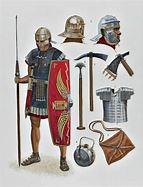

The cat is still there. He sits and watches you on the computer. This may be the start of a horror story, but it is just a cat you know.
The common Roman legionair is equiped with a pilum, scutum and a set of armour. The pilum is a Roman Javaline, these were thrown before they engaged in melee. The scutum is large square shield. Their armour could be either chain, plate, or scale armour.
